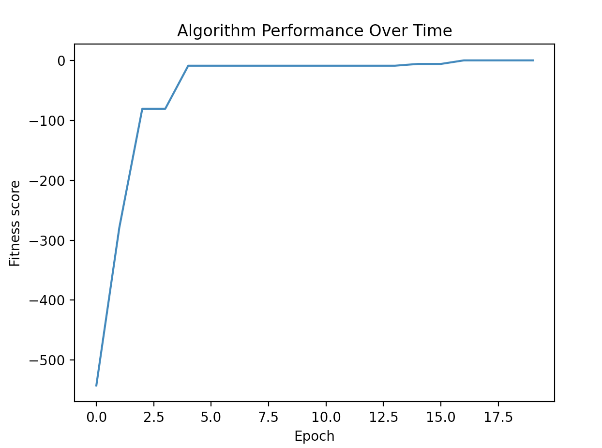

Using the Package
Getting Started
To get started with this package clone this repo:
git clone https://github.com/mwolinska/Evolutionary-Optimization
Then enter the correct directory on your machine:
cd Evolutionary-Optimization
This package uses poetry dependency manager. To install all dependencies run:
poetry install
Running Experiments
To run the code type the following in your terminal. The default experiment is a simple optimization of the $x^{2}$ using integers.:
run_evolution
The parameters used for the run can be edited within the main.py file.:
genotype_class = Genotype.get_genotype(Genotypes.FLOAT_LIST)
phenotype_class = Phenotype.get_phenotype(Phenotypes.PARABOLA)
fitness_function_class = FitnessFunction.get_fitness_function(FitnessFunctions.MINIMIZE)
fitness_function_instance = fitness_function_class()
evolutionary_algorithm = Evolution(
phenotype=phenotype_class(genotype_class()),
number_of_individuals=10,
number_of_generations=5,
fitness_function=fitness_function_instance,
ratio_of_elite_individuals=0.1
)
This will produce the following output:
The value of the best individual is [-0.2240206935262563]
To generate the graph of fitness over time use:
evolutionary_algorithm.plot_performance()
within the run_evolution function to produce the following output:
{kind=link}
To generate the graph of the phenotype function and best individual phenotype / genotype pairs, use:
# generate points to plot the phenotype function
phenotype_function_points_tuple = generate_points_for_function(
phenotype=evolutionary_algorithm.population.phenotype,
bottom_plotting_limit=-10,
c=10,
)
# plot phenotype function and best individual phenotype / genotype pairs
evolutionary_algorithm.plot_phenotype_function_and_best_individuals(phenotype_function__points_tuple)
To produce the following output:

Personalising Experiments
To personalise your experiment you can either use the prebuilt phenotypes and genotypes using our interface, or you can build your own. To do so, you simply need to create a new phenotype / genotype class that inherits from the corresponding abstract class and implement the methods to suit your needs.
The classes structure is outlined in the diagram below

The implemented fitness functions are outlined in the diagram below.